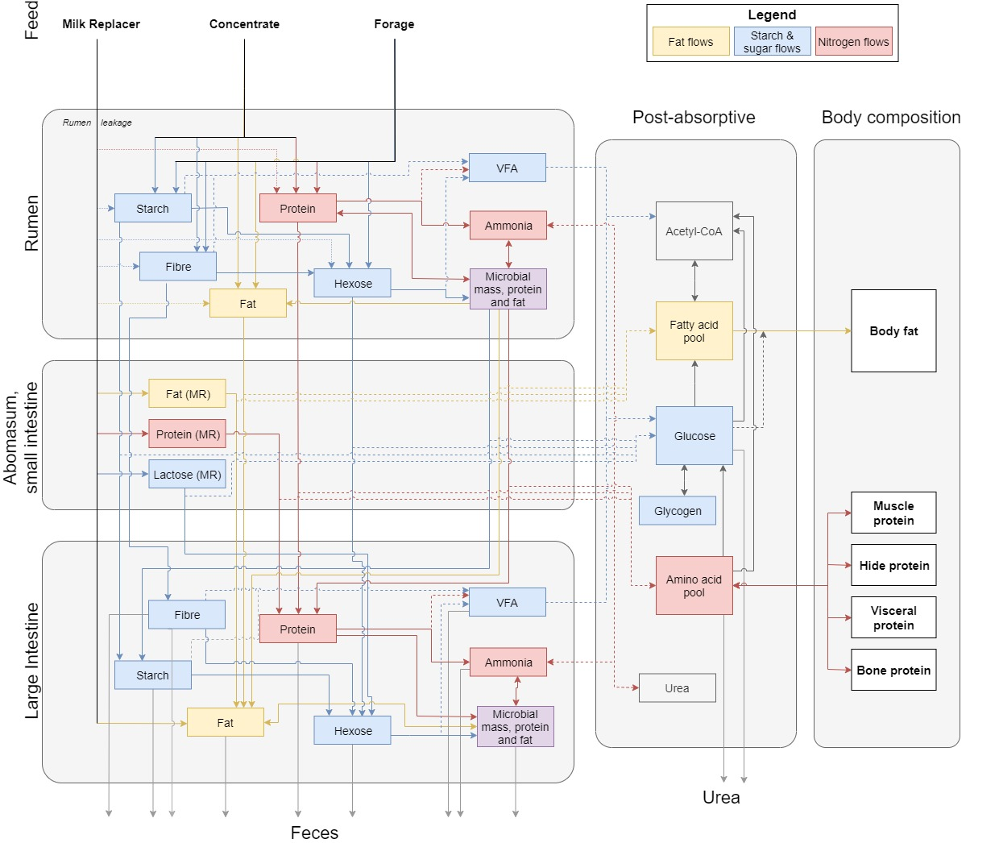

SiMON - Background
SiMON content list
SiMON (SImulating Metabolism Of Nutrients in preruminants) is a mechanistic model integrating protein and energy metabolism in preruminant calves of 80-240 kg live weight.
The objectives of SiMON are to gain insight into the partitioning of nutrients in the body of growing calves and to provide a tool for the development of feeding strategies for calves in this weight range.
SiMON simulates the partitioning of nutrients from ingestion through intermediary metabolism to growth, consisting of protein, fat, ash and water.
The model contains numerous state variables, including fats, starches and sugars, and protein deriving from milk replacer, forage and concentrate separately. It includes volatile fatty acid (VFA) pools, microbial pools (microbial mass, microbial protein and microbial fat), amylolytic and cellulolytic hexose and ammonia as metabolite pools. Body constituent pools include muscle, hide, viscera and bone protein, body fat and ash.
Turnover of protein and fat is represented. SiMON also includes a
routine to check possible dietary amino acid imbalance and can be used
to predict amino acid requirements (use) on a theoretical basis.
SiMON is based on various experiments, specifically designed for this purpose.
Simulations of protein and fat accretion rates over a wide range of nutrient input suggest the model is sound.
It can be used as a research tool and for the development of feeding strategies for preruminant calves.

Simplified flowchart of SiMON. Boxes represent pools, arrows represent nutrient fluxes. Dashed arrows represent utilization/absorption of nutrients.
For more information, the user is referred to the papers published about the model:
Gerrits, W.J.J., Dijkstra, J. & France, J. (1997). Description of a model integrating protein and energy metabolism in preruminant calves.
Journal of Nutrition 127: 1229-1242.
Gerrits, W.J.J., France, J. Dijkstra, J. Bosch, M.W. Tolman, G.H., &
Tamminga, S. (1997) Evaluation of a model integrating protein and energy metabolism in preruminant calves. Journal of Nutrition 127:
1243-1252.
Back to Main menu
Back to top